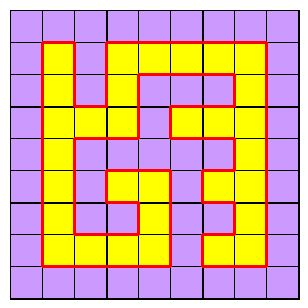

Rules
In a Yin Yang puzzle, it's required to colour all the cells in a grid in one of two colours, such that (i) all cells of one colour are orthogonally connected to each other, and so are all cells of the other colour, and (ii) no 2x2 region is wholly one colour
No 2x2 checkerboard possible
0 or 2 colour changes on boundary
0 or 2 colour changes on boundary
It's easily seen that no 2x2 region can be coloured in checkerboard fashion - alternation of colours around the square, nor can we have an alternation of for regions around the border, both because if one colour is connected the other cannot be. The second fact also shows that either (i) all the border cells are one colour, or (ii) the border cells split into at most two continuous blocks of cells around the border.
Odd number of edge cells when boundary is two-coloured (m or n or both odd)
What's less well known is that, in the case where the border is split into two colour blocks, then the number of border edge cells (not corner cells) in each of the two blocks is constrained. Consider the boundary between the two colours. It starts and ends on the border of the grid, if the border is split. It must also pass through every point which is a centre of a 2x2 once each. If it did not, there would be a 2x2 of one colour - against the rules. If it visited twice, that is the same as a checkerboard pattern in a 2x2, which has already been ruled out.
If these centres are coloured alternately black and white we see also that the boundary visits white and black cells alternately. If there are equal numbers of white and black centres, (as there is for an m x n grid whenever either or both of m and n are odd, such as 9 x 9), then the first centre it vists after starting on the grid border must be an opposite colour to the last centre before it finishes on the border. Counting around the border, this will always mean that there are an odd number of border edge cells between the first and last boundary steps.

One-colour boundary
If the border cells are all the same colour, that implies that the boundary forms a closed loop.

m, n both even
For grids where m and n are both even, the number of 2x2 centres is odd and cannot balance. No closed loop is possible; the boundary must break the border in to two colour blocks, and must enter and exit from a white centre (as drawn here) so both blocks have an even number of edge cells.